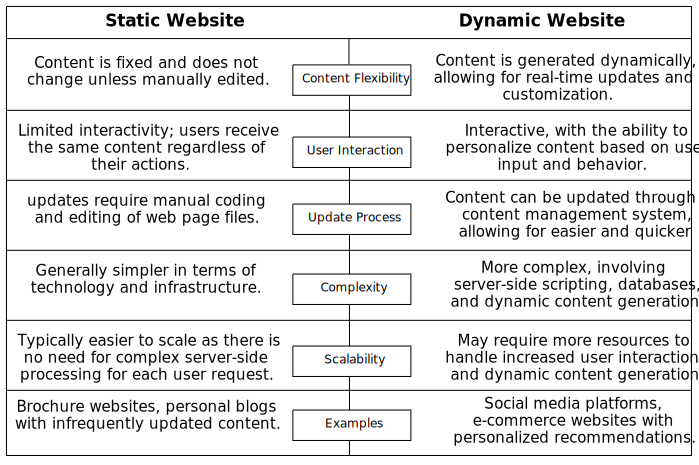
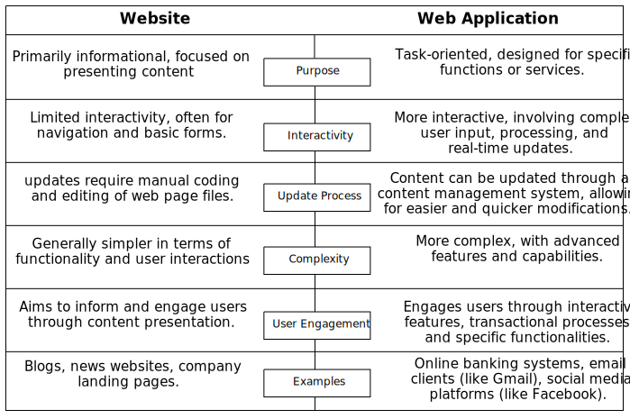

Internet: A global network connecting millions of computers, facilitating the
exchange of information through standardized protocols.
1960s: The concept of the internet originates from research projects like ARPANET, aiming to create
a decentralized communication network.
1970s: The first email is sent, and the TCP/IP protocol, the foundation of the modern internet, is
developed.
1980s: The domain name system (DNS) is introduced, making it easier to navigate the growing network.
1990s: The World Wide Web is born, bringing a user-friendly interface and multimedia capabilities.
2000s: Broadband internet becomes widely available, transforming the internet into a mass
communication medium.
2010s: The rise of social media, mobile devices, and cloud computing further revolutionize internet
usage.
2020s: Ongoing advancements include the expansion of 5G technology and the increasing integration of
the internet into various aspects of daily life.
History of World Wide Web
World Wide Web (WWW): An information system that allows documents to be connected
through hypertext links, accessible via the internet.
1989: Sir Tim Berners-Lee proposes the concept of the World Wide Web, envisioning a system to share
and retrieve information using hypertext.
1990: The first web browser, WorldWideWeb (later renamed Nexus), is created by Tim Berners-Lee.
1993: The introduction of Mosaic, the first graphical web browser, enhances the user experience and
boosts web accessibility.
1995: Netscape Navigator is released, becoming one of the most popular web browsers of its time.
Late 1990s: The dot-com boom sees a surge in internet-based businesses, contributing to the rapid
growth of the World Wide Web.
Early 2000s: The rise of dynamic web content and the emergence of web standards further improve the
functionality and design of websites.
2010s: The dominance of mobile devices leads to the development of responsive web design, optimizing
websites for various screen sizes.
2020s: Ongoing trends include the evolution of web technologies, such as WebAssembly and Progressive
Web Apps, enhancing web application capabilities.
Discussion of some basic protocols
HTTP
Stands for Hypertext Transfer Protocol, which is the foundation for data communication on the
World Wide Web.
It serves as a protocol used to access and retrieve information from the vast expanse of the
WWW.
HTTP facilitates the transfer of data in various formats, including plain text, hypertext,
audio, video, and more.
Data transfer in HTTP occurs in a MIME-like format, where MIME (Multipurpose Internet Mail
Extensions) defines the types of files that can be transferred.
While similar to the FTP protocol in file transfer capabilities, HTTP is simpler, utilizing a
single connection without the need for a control connection to transmit files.
HTTP shares similarities with SMTP (Simple Mail Transfer Protocol) in data transfer between
clients and servers. However, differences arise in message handling: SMTP messages are stored
and forwarded, whereas HTTP messages are delivered immediately.
Features of HTTP
Connectionless Protocol: HTTP operates as a connectionless protocol, where the client initiates
a request and awaits a response from the server. Once the server processes the request and sends
back the response, the HTTP client disconnects the connection. This stateless nature enhances
simplicity and efficiency in data communication. For instance, a user accessing a web page sends
an HTTP request to the server. Once the server processes the request and sends back the webpage
data, the connection is immediately disconnected.
Media-Independent Protocol: HTTP is a media-independent protocol, meaning it supports and can
access information in various formats. Whether it's plain text, hypertext, images, audio, or
video, HTTP facilitates the transfer of diverse content types over the World Wide Web.
Statelessness: One of the fundamental features of HTTP is its statelessness. Each request from a
client to a server is independent, and the server does not retain any information about the
client's previous requests. This design simplifies implementation and improves scalability in
distributed systems.
Simple and Extensible: HTTP is designed to be a simple and extensible protocol. Its simplicity
promotes ease of implementation, while its extensibility allows for the addition of new features
without affecting the core functionality. This adaptability has contributed to the longevity and
widespread use of HTTP on the internet.
Request-Response Model: HTTP follows a request-response model, where clients send requests to
servers, and servers respond with the requested information. This clear and standardized
interaction model forms the basis for communication between browsers and web servers, enabling
the seamless retrieval of web pages and resources.
SMTP (Simple Mail Transfer Protocol)
SMTP, which stands for Simple Mail Transfer Protocol, comprises a set of communication
guidelines facilitating the transmission of electronic mail over the internet. It plays a
crucial role in the process of sending and receiving emails.
Primarily utilized for sending messages, SMTP is a program that operates based on email
addresses. Users can compose and dispatch emails to other computer users, initiating
communication across the digital landscape.
One of SMTP's key functionalities is to provide a reliable mail exchange mechanism between
users, whether they are on the same or different computers. This ensures the seamless flow of
electronic communication, contributing to the global network of interconnected mail servers.
SMTP operates on a store-and-forward model, temporarily storing outgoing messages on mail
servers before forwarding them to their recipients. This process allows for efficient message
delivery, even when the sender and recipient are not online simultaneously.
SMTP is commonly employed in conjunction with other email-related protocols, such as POP3 (Post
Office Protocol) and IMAP (Internet Message Access Protocol), to enable comprehensive email
services with features like retrieval and storage.
POP3 (Post Office Protocol 3)
POP, short for Post Office Protocol, is a communication protocol used for retrieving electronic
mail from a mail server to a local device.
Advantages of using POP3 protocol:
Offline Email Access: POP3 allows users to read emails offline. An internet connection
is only required during the download of emails from the server. Once downloaded, all
emails are stored locally on the user's computer, providing access even without an
active internet connection.
Fast and Convenient Access: As emails are stored locally, accessing them is quick and
convenient. Users don't have to wait for emails to load from the server, enhancing the
overall user experience.
No Size Limitations: POP3 imposes no limitations on the size of received or sent emails.
This flexibility is advantageous when dealing with large attachments or multimedia
content.
Reduced Server Storage: Since all emails are stored on the local computer, POP3 requires
less server storage. This helps in optimizing server resources and reduces the overall
load on the email server.
Easy Configuration and Use: POP3 is known for its simplicity in configuration and usage.
Setting up a POP3 email account is straightforward, making it accessible for users with
varying levels of technical expertise.
IMAP (Internet Message Access Protocol)
IMAP, which stands for Internet Message Access Protocol, is a communication protocol used for
accessing and managing email messages on a mail server.
Advantages of using IMAP protocol:
Remote Email Access: IMAP enables users to access their emails remotely from multiple
devices, maintaining synchronization between the server and the devices. Changes made on
one device are reflected across all connected devices.
Server-Side Storage: Unlike POP3, IMAP stores emails on the mail server, providing a
centralized repository. This ensures that emails are accessible from any device,
promoting flexibility and convenience.
Folders and Labels: IMAP supports the organization of emails into folders and labels on
the server. This organizational structure is synchronized across devices, aiding in
efficient email management.
Efficient Message Handling: IMAP allows users to manage emails directly on the server,
facilitating tasks such as marking emails as read or unread, flagging, and deleting.
These actions are reflected universally across all connected devices.
Real-Time Synchronization: IMAP provides real-time synchronization, ensuring that any
changes made to the mailbox, such as read/unread status or folder structure, are
immediately reflected on the server and all devices.
FTP (File Transfer Protocol)
FTP, which stands for File Transfer Protocol, is a standard internet protocol provided by
TCP/IP. It is utilized for the efficient transmission of files from one host to another over a
network.
Key features of FTP include:
File Transmission: FTP serves as a reliable method for transmitting files
between computers connected to the internet. It ensures secure and organized data transfer
through a set of predefined rules.
Remote File Access: One of the prominent features of FTP is its capability
to provide remote access to files. Users can manipulate and retrieve files located on a
remote server, enhancing accessibility and collaboration.
Download Functionality: FTP is commonly used for downloading files from a
server to a local computer. This functionality is particularly useful for retrieving
resources or documents from a remote location to the user's device.
Web Page File Transfer: FTP plays a vital role in transferring web page
files from their creators to servers that host content for other computers on the internet.
Examples of FTP clients include FileZilla, which facilitates a user-friendly interface for
managing file transfers.
FTP is employed in various scenarios, such as website maintenance, software distribution, and
collaborative projects, where the seamless transfer of files is essential for effective
communication and data sharing.
Telnet
The internet's primary task is to provide users with services, such as running different
application programs at remote sites and transferring results to local computers. However, this
poses a challenge – creating specific client-server programs (like FTP and SMTP) for each demand
is impractical.
In response to this challenge, a more versatile solution is needed. Telnet addresses this by
providing a universal client-server program, allowing users to access any application program on
a remote computer without the need for individual programs for each specific demand.
Named after "terminal network," Telnet stands out as a popular client-server program. Its role
is to establish a connection to a remote computer in a way that makes the local terminal appear
as if it is physically located at the remote site.
By acting as a bridge between the user's local terminal and the remote computer, Telnet provides
a virtual integration that enhances the user experience. Users can execute commands and utilize
applications as if they were locally installed, bringing efficiency to remote computing.
However, it's important to note that Telnet's usage has declined due to security concerns.
Transmitting data, including login credentials, in plain text makes it vulnerable to
interception. Secure alternatives like SSH (Secure Shell) have gained prominence for providing a
more secure method of remote access.
DNS (Domain Name System)
DNS serves as a directory service that facilitates the mapping between the name of a host on the
network and its corresponding IP address. This crucial function ensures efficient and
user-friendly communication across the internet.
The working of the internet relies on DNS to translate human-readable domain names into
machine-readable IP addresses, enabling seamless navigation and connectivity.
In the hierarchical structure of DNS, each node in the tree has a domain name. A full domain
name is a sequence of symbols specified by dots (.) indicating the organizational hierarchy of
the network.
As a service, DNS plays a pivotal role in translating domain names into IP addresses. This
functionality allows users on the network to utilize user-friendly names, enhancing
accessibility and ease of use.
For example, consider the domain name "www.google.com." In this case, "google.com" is the
domain, and "www" is a subdomain or hostname within the domain. DNS translates "www.google.com"
into the corresponding IP address, facilitating the user's access to the Google website.
Generic top-level domains (gTLDs) are categories of domain names serving specific purposes. Some
examples include:
.com - Used for commercial organizations.
.edu - Reserved for educational institutions.
.gov - Designated for government network support centers.
.org - Utilized by non-profit organizations.
Website
Simple definition: A website is a collection of web pages and related content that is identified by
a common domain name and accessible over the internet.
Standard definition: A website is a set of interconnected web pages, usually containing multimedia
content, including text, images, videos, and interactive elements, that are hosted on a web server
and accessible through a specific domain name. Websites are designed for information dissemination,
communication, e-commerce, and various online activities, and they use hyperlinks to navigate
between different pages and resources.
Static and dynamic websites
Static Websites:
A static website is composed of fixed, unchanging web pages that are delivered to the
user exactly as they are stored on the web server.
The content of a static website
remains the same for all visitors, and any updates or modifications require manual
coding and editing of the web page files.
Static websites are generally simpler in
structure and are suitable for presenting information that doesn't frequently change.
Dynamic Websites:
A dynamic website is like a smart, adaptable platform that can change its content and
functionality in real-time, responding to user input and providing a more interactive
and personalized experience compared to static websites.
A dynamic website is like a versatile platform that adjusts its content based on user
interactions. For instance, on social media platforms like Facebook, each user sees a
personalized home screen with unique posts and updates, showcasing the dynamic nature of
the website as it tailors content to individual preferences and activities.
A dynamic website generates content on-the-fly, usually in response to user input or
interactions. The content is generated by server-side scripts or applications, and it
can vary based on factors such as user preferences, database queries, or real-time data.
Dynamic websites often involve a content management system (CMS) that allows easy
updating and editing of content without the need for extensive coding skills. They are
more interactive and adaptable to user behavior.

Website vs Web application
A website is a collection of related web pages, multimedia content, and resources accessible
through a common domain name. It typically provides static or dynamic information and is
designed for users to navigate and consume content.
A web application is a software program or application that runs in a web browser. It is
designed to perform specific tasks or functions and often involves more complex interactions,
data processing, and user engagement compared to a traditional website.

Web server vs Application server
A web server serves static content like HTML, CSS, and JavaScript files. It is responsible for
handling HTTP requests, delivering web pages, and performing URL redirection and load balancing.
Web servers are optimized for serving static resources efficiently.
An application server executes business logic and serves dynamic content. It provides an
environment for running server-side applications, handling complex transactions, managing
resources, and supporting various protocols like RMI and JMS. Application servers are designed
to support enterprise-level applications and services.